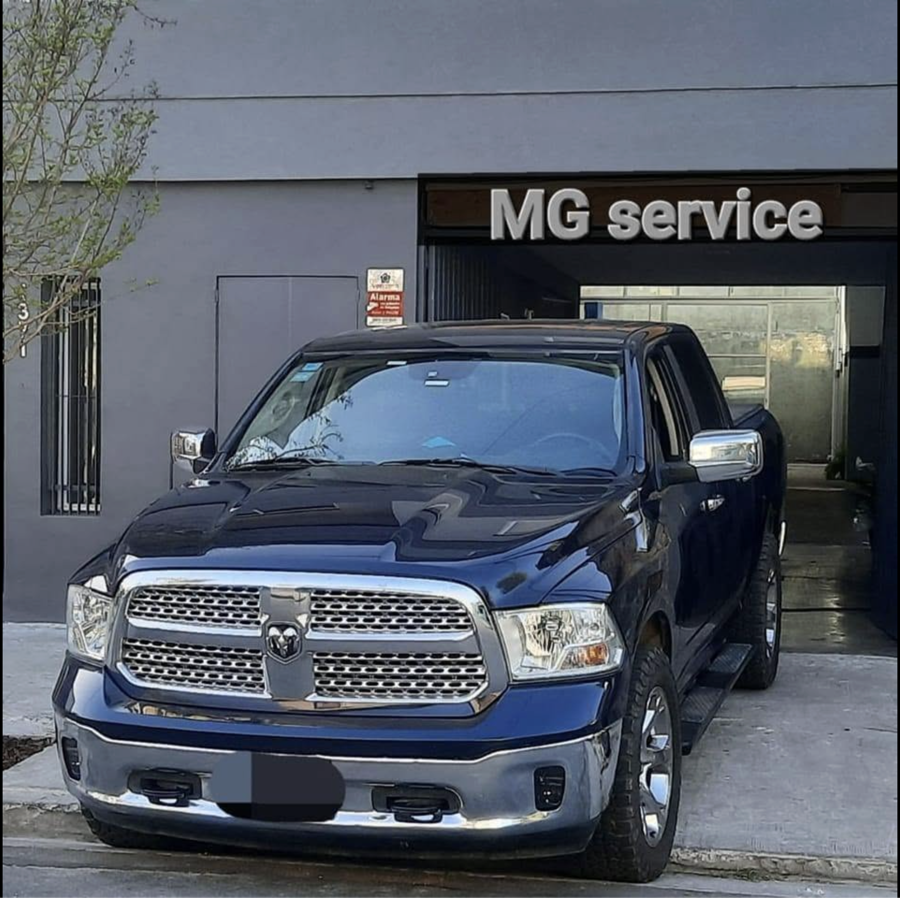

MG Service
Especialización técnica, transparencia y diagnóstico de última generación.

Construido desde la especialización
MG Service nace de la especialización: en lugar de ser "un taller más", nos enfocamos en lo que otros talleres evitan — las cajas de cambio mecánicas y automáticas — y construimos desde ahí un servicio integral pensado para autos exigentes.
Trabajamos con equipamiento de diagnóstico de última generación, documentamos cada proceso y entregamos presupuestos por escrito antes de tocar el auto, porque la confianza se construye mostrando el trabajo, no solo prometiéndolo.
Instalaciones y equipamiento
Bahías de trabajo con elevador, equipamiento de diagnóstico computarizado y un espacio pensado para trabajar con orden y precisión.
Bahías con elevador
Espacio de trabajo dedicado para cada vehículo, sin apuro ni amontonamiento.
Diagnóstico computarizado
Equipos de escaneo de última generación para un diagnóstico preciso.
Orden y registro
Cada trabajo se documenta con fotos y presupuesto escrito desde el inicio.
Marcas con las que trabajamos
Coordiná tu turno hoy
Contanos qué necesita tu vehículo y te respondemos por WhatsApp en el horario de atención.
Hablar por WhatsApp